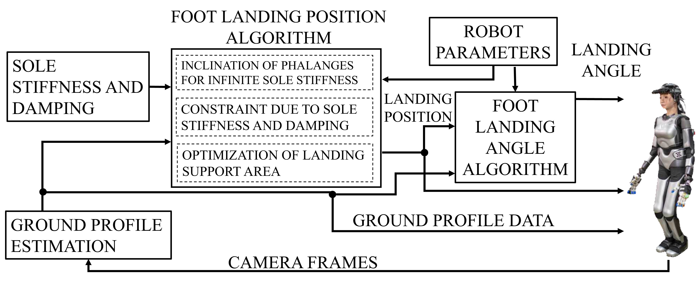
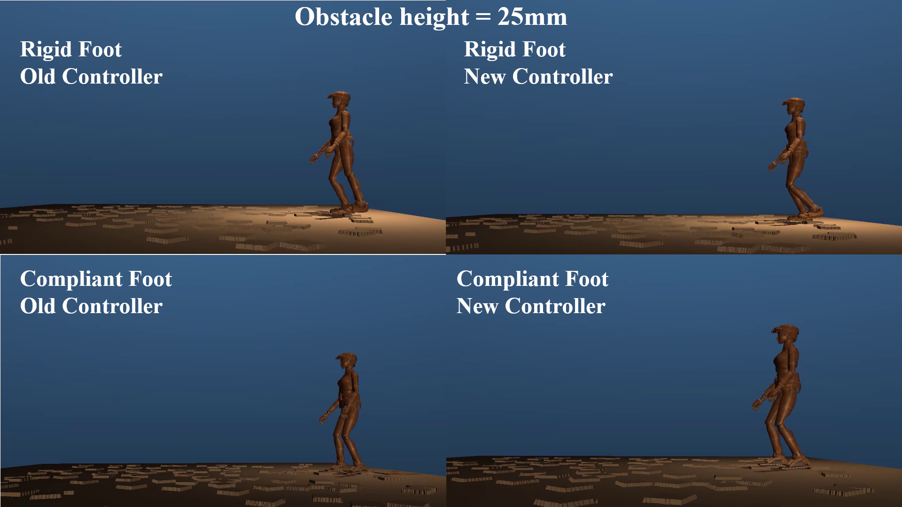
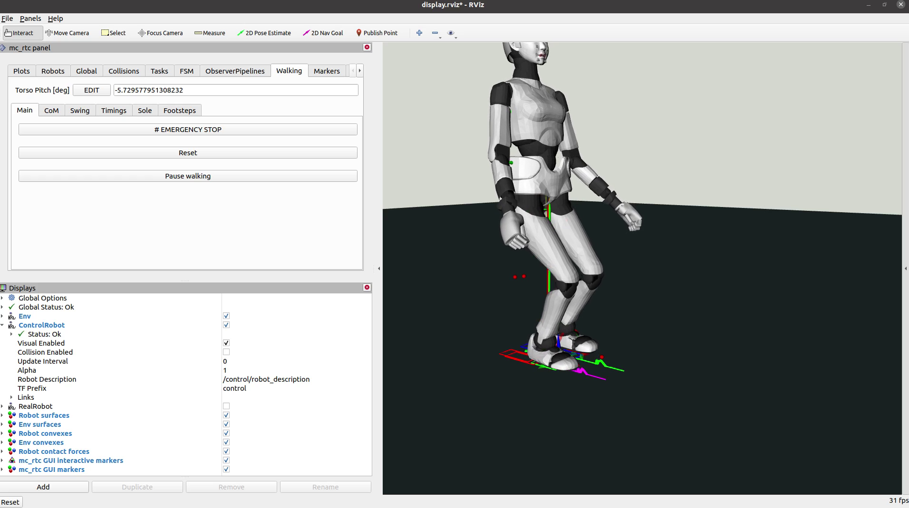
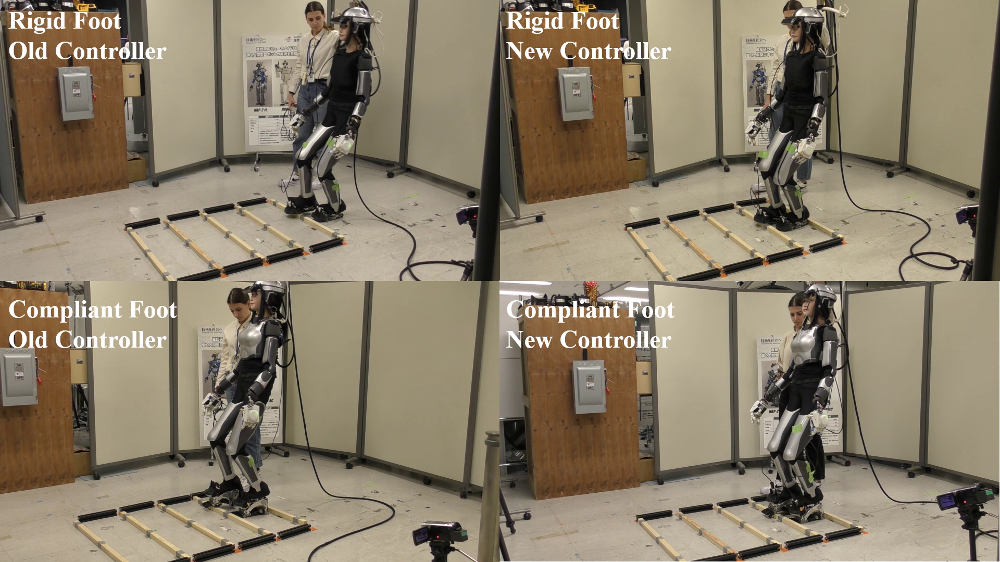

A compact visual overview of how the RGB-D scan is converted into a safe region of interest and foothold candidate.
Click any figure to open it full-size.
Real robot stepping sequence. The humanoid robot scans the terrain ahead using RGB-D sensing and executes adaptive footsteps to maintain stability on uneven ground.

Rigid vs compliant contact comparison. The compliant foot improves stability and robustness during walking on irregular terrain compared to rigid contact.

Simulation validation. The perception and foothold planning pipeline was validated in simulation before real robot deployment.

Controller visualization (RViz).
Real-time visualization of the humanoid model, terrain geometry, contact surfaces, and foothold planning within the control framework.

Controller and perception integration. Visualization of the humanoid robot model and terrain representation used for real-time foothold planning.